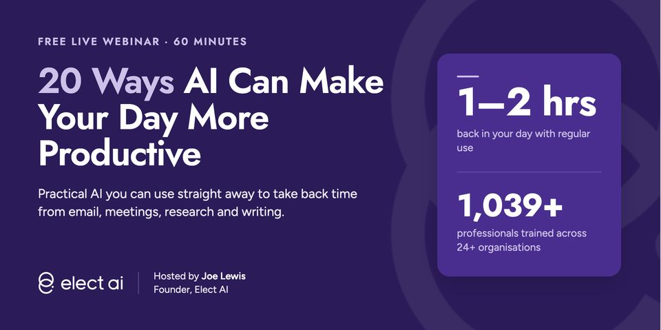
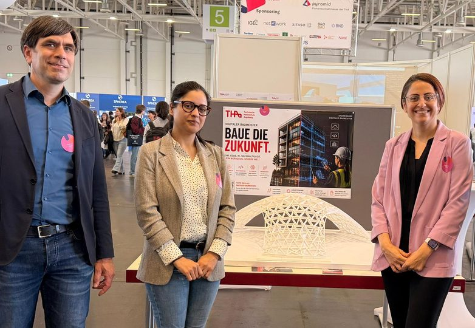
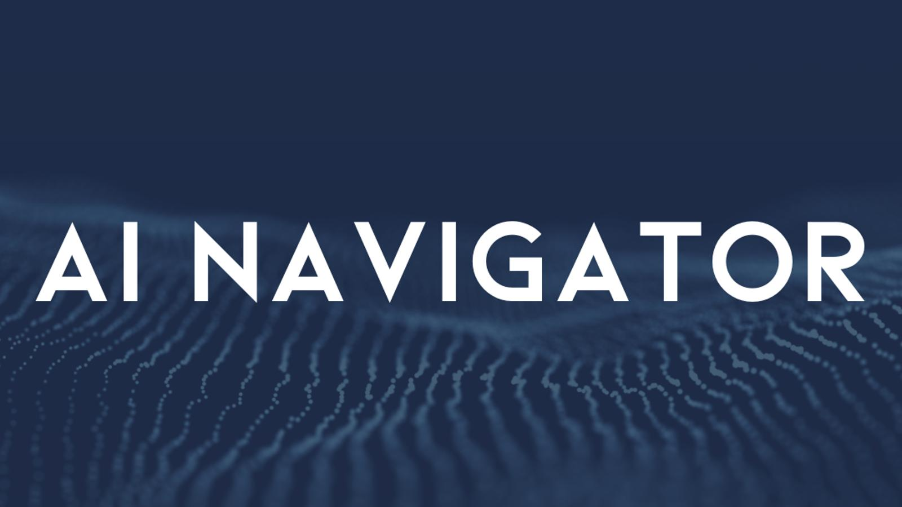
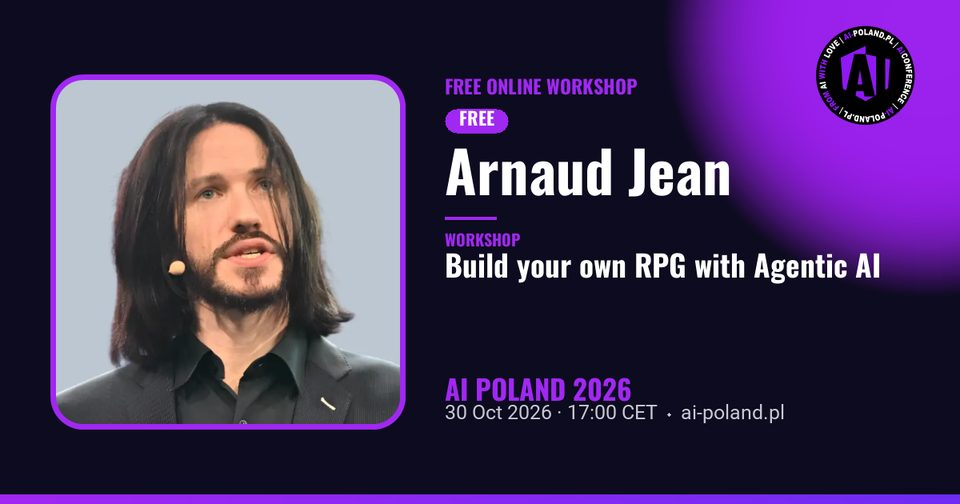
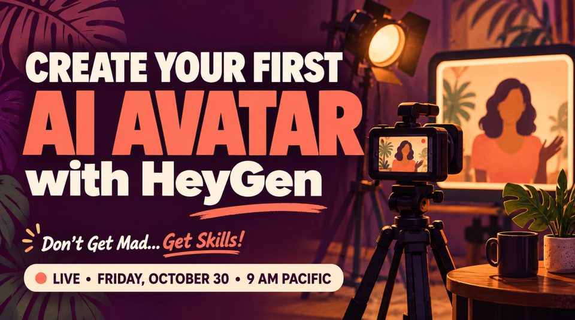
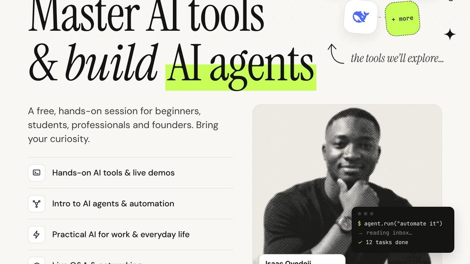

今日舉行 · 香港
來源：Nicole 提供
Grok Bot × OPC｜用「對話」帶領你的 AI 團隊
拆解香港人易上手嘅 AI Agent 一人公司玩法：AI 員工分工、公司知識庫、5 個新手錯誤同 5 條銷售工作流。報名後喺 WhatsApp 群組攞連結。
報名／詳情 →卷報 · 免費 AI 課程
二零二六 · 十月三十日 · 星期五
篩選準則：優先收錄今日舉行嘅線上免費 AI 研討會／工作坊；並補上今日仍可報名、隨時開讀嘅常設免費課。連結以官方為準。
今日香港時段有 DotAI、教育局粵語家長講座，同 Elect AI（約 20:00 HKT）等；另有歐洲日場、北美全日／清晨場。TechGig 新聞曾標今日 Masterclass，但官方報名頁已改顯示 12 月 1 日，故剔除。Accupass「AI 轉職班」屬付費課說明會，已註明。
精選推介 · 來源：Nicole 提供
拆解香港人易上手嘅 AI Agent「一人軍團」玩法：用對話帶領 AI 團隊、公司知識庫、新手易踩嘅坑，同實用銷售工作流。報名後可喺 WhatsApp 群組攞直播連結。
報名／詳情 →本週日 · 線上講座推廣
把需求說清楚、把工作定義完整，並判斷與確認 AI 交付的成果，是這次講座的核心。
能接續任務的個人助理、自動分類郵件的 App，還有幾個簡短又好玩的圖像提示詞，本週日一起看！
👉 立即報名：https://forms.gle/hw1vpvbwnfRWQUmV6
💡 五大精彩看點
同一個專案，不必每次重新交代背景。「您的 dot」能記住工作目標與使用偏好，接續先前任務，協助追蹤進度、整理資訊。洪老師將介紹如何設定長期工作，以及雲端與本機工作環境的選擇。
上傳照片，輸入一個魔法提示詞，將人物轉成 Q 版造型，再延伸不同表情、去背，製作貼圖素材。也能指定物件，生成立體分解圖。洪老師將示範圖像提示詞，帶你看見不同的創作用途。
陳昭明老師將以 Jev 為例，介紹決策模型如何分類、評分，再依急迫性與信心程度分派處理，並比較決策模型與大型語言模型的速度、成本及輸出方式。
黃朝健老師將示範與 Codex 協作開發桌面 App，讀取 Gmail 的主旨、寄件者與內容，完成搜尋、分類與摘要，並將整理結果匯出 CSV。開發過程也會呈現如何交代功能、設定限制及提出修改要求。
益師傅將分享如何用 Codex 串起多份報告、Excel 分析與簡報製作，應用於會議報告與決策簡報。
⏰ 11/1（日）19:30–21:30 線上講座
📘《ChatGPT 對話 × Work × Codex：從生成式 AI 到 AI Agent 工作術》
👉 立即報名：https://forms.gle/hw1vpvbwnfRWQUmV6
深智數位股份有限公司
拆解香港人易上手嘅 AI Agent 一人公司玩法：AI 員工分工、公司知識庫、5 個新手錯誤同 5 條銷售工作流。報名後喺 WhatsApp 群組攞連結。
報名／詳情 →家長講座：引導子女善用 AI 自主學習，以及化解 AI／網絡陷阱。粵語直播。教育城報名截止標示至今晚 19:00——若仍開放請盡快報；家長網另列截止 10/29，以教育城頁為準。
報名／詳情 →
實用導向：研究分析、寫作、收件箱、會議行政等 20 個提效方法；涵蓋 Claude、ChatGPT、Copilot、Gemini 等。出席後有重溫電郵。
報名／詳情 →
建築／規劃專業向：簡介後分組實作 AI Agents、AI 城市規劃或結構設計。官方英文頁確認線上免費；報名經 eveeno。
報名（eveeno）→Microsoft XIAD 課程：為 Power BI／Fabric 模型做好 AI 對話查詢（Copilot、Data Agents）。中階、需 Power BI 經驗；完成問卷可獲 Microsoft 證書。
報名／詳情 →
聚焦免費版 Microsoft Copilot Chat 同實用提示：當日可用嘅更好輸出技巧。短場、零軟件費用，適合午／晚間快速補課。
Luma 報名 →介紹 AI 時代後端工程師要學咩、點同 AI 協作設計系統。屬付費轉職課導客說明會，唔係完整課程；想了解轉職路徑可旁聽。
Accupass 報名 →由基礎提示跳去實務應用：講解 AI Skills Ladder 階段，並現場示範建置／部署一個 AI 應用。附免費資源同 prompts；適合中小企同已試 ChatGPT 嘅人。
報名／詳情 →討論點樣由「問 AI」走向用 AI 建站、做 app、自動化同開產品。偏願景同機會導向，適合創業者、學生同想提升產出嘅人。
Luma 報名 →
Live coding：用 Strands Agents 編一個 Game Master，協調擲骰、規則、角色同故事 Agent；涵蓋 RAG、MCP、A2A。電郵登記即可，適合有 Python／Agent 興趣嘅工程師。
免費登記 →
個人 Digital Twin 流程：拍攝同意、設定同 20–30 秒短片腳本。出席免費；HeyGen 額度／功能視帳戶而定，可能需付費方案先用晒功能。
報名／詳情 →BA 實務：用 AI 做研究、需求／user stories、流程分析同會議整理。唔講空談理論，偏工具同工作流；適合 BA、PM、顧問。
Luma 報名 →
入門互動場：AI 工具示範、Agent／自動化概念、日常同職場應用，加 Q&A。無需經驗；香港清晨舉行，適合夜貓或願早起嘅人。
Luma 報名 →以下為長期開放、可即刻自學嘅免費線上課程／教材；唔係今日專場，但適合錯過直播後補學。
十二章實作：Transformers、Datasets、Tokenizer、微調同推理。官方寫明完全免費、無廣告。適合想親手煉 LLM／NLP 嘅工程師。
開讀 →由 Agent 基礎到 smolagents、LlamaIndex、LangGraph；含 agentic RAG 同結業專案。想跟當下「代理式 AI」潮流可由此入門。
開讀 →經典免費深度學習課：電腦視覺、NLP、表格數據、部署；用 PyTorch／fastai。需一定 coding 經驗（建議 Python），可用免費雲端 GPU。
開讀 →開源課綱：提示工程到 RAG 同 Agents；Python／TypeScript 範例。可讀教材即學；跑程式可用 Azure／Foundry Local 等（部分 API 或需費用）。
開讀 →非技術向：生成式 AI 能做／不能做咩、提示工程同業務影響。影片免費；實驗室／證書或需 PRO。適合想建立共同語言嘅產品同管理層。
開讀 →Google 經典 ML 速成：概念、TensorFlow 練習同真實案例。搭配 Introduction to Generative AI 等「No charge」路徑，適合由 ML 基礎補起。
開讀 →官方學習中心：Claude 使用、AI Fluency、Claude Code、API／MCP 等。適合想系統學習用 Claude 同相關工具嘅人。
開讀 →